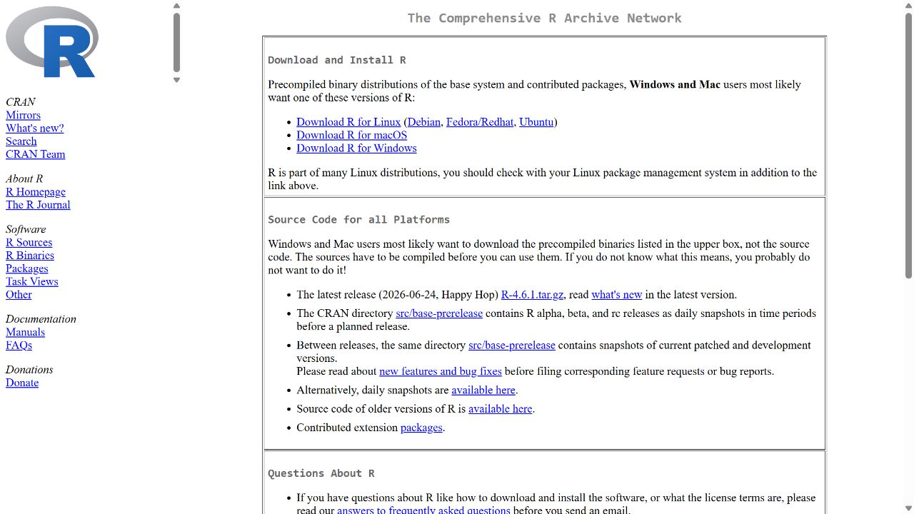
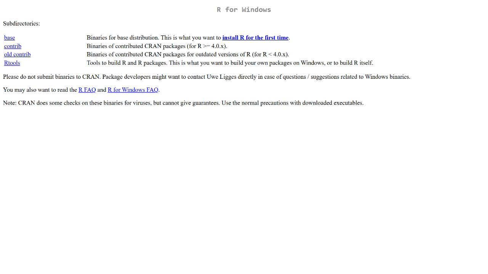
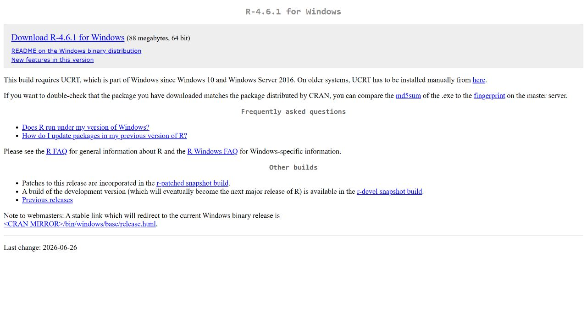
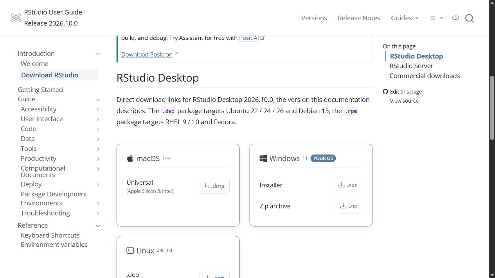
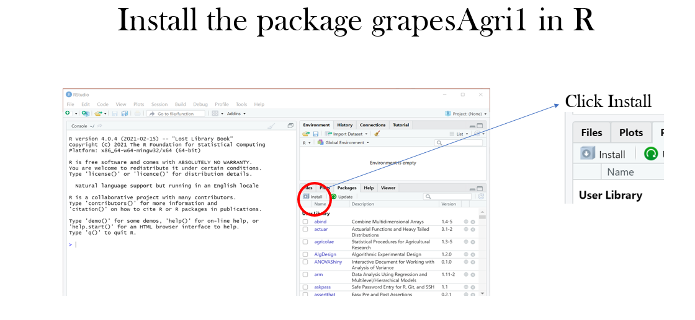
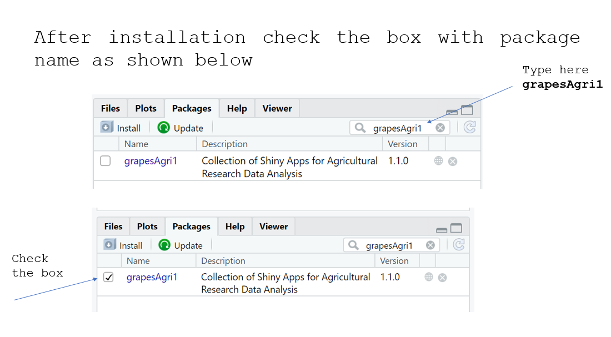

1 Getting started with R
1.1 Learning outcomes
After this chapter, you should be able to distinguish R from RStudio and Quarto, create a project, run and save commands, and install and load a package.
Statistical software in context
This overview updates the original lecture discussion with a focused selection of current tools and a dedicated RAISINS lesson. The original notes remain archived; the course calculations use R.
Data science is a fast growing field with the development of advanced statistical tools for data analysis and visualization. When the data volume is large and also when precision is required, we depend on statistical software to get better insights from the data. Statistical software makes analysis easy, produces more precise results, enables us to use complex statistical tools and generates advance complex graphical outputs.
One cannot blindly depend upon statistical software for data analysis, as you can use any software for data analysis as per your convenience. Even some of the basic statistical tools, you can perform calculations manually. Without proper knowledge in statistics, every software is a garbage in garbage out. What that really matters is knowledge in statistical concepts and tools, so that effective interpretations can be made from the data.
Agricultural experiments demand a wide range of statistical tools for analysis, which includes exploratory analysis, design of experiments, and statistical genetics. It is a challenge for scientists and students to find a suitable platform for data analysis and publish the research outputs in quality journals. Statistical software differs in cost, licensing, interface, and analytical capabilities. The open source programming language R and associated ecosystem of packages, provides an excellent platform for data analysis and is widely used in agricultural teaching and research. Insufficient programming and computational knowledge are the primary challenges for agricultural researchers using R for analysis.
In our sessions, I will be using R studio. Agricultural scientists and students need not become professional software developers, but they should learn enough programming to understand, adapt, and reproduce their analyses. I have seen agricultural researchers take up R workshops and leave it behind as such workshops mainly deals with code chunks; user will get easily tired of that. Beauty of R is that, it is a free open-source software. Apart from the software used, I again insist that students and researchers should strengthen their basic statistics knowledge and they should be able to decide, what tool should be used and when. I strongly recommend that you should go through the basic statistical theory by visiting my e-book Textbook of Agricultural Statistics. Before proceeding further, one should also have a basic knowledge about different statistical software available.
1.2 Statistical software for agricultural analysis
Statistical software helps us organize observations, fit models, visualize relationships, and communicate results. Agricultural applications include summarizing soil properties, comparing treatments in field experiments, modelling growth, and examining associations between weather and yield. The choice of software should follow the scientific question, experimental design, and need to reproduce the analysis.
1.2.1 Understanding access, licences, and interfaces
Open-source software provides source code under a licence that specifies how it may be used, modified, and redistributed. Free of charge describes cost; it does not, by itself, establish that source code is available. Public-domain software has a different legal status from software distributed under an open-source licence. Commercial software and hosted services may require a licence or subscription, although trials, educational access, or limited preview modes may be available.
An interface is another consideration. A command-based environment records an analysis as instructions that can be inspected and rerun. A graphical interface lets the analyst choose variables and options through menus. A web application runs through a browser. These categories can overlap: a graphical web application may use R for its calculations, while R itself can be used through an editor such as RStudio. Check the current provider documentation for access conditions and supported analyses.
1.2.2 A focused comparison of current tools
The following selection was reviewed on 16 October 2026. It emphasizes tools relevant to this course rather than attempting a catalogue of every statistical program.
| Tool | Main role | Relevance to an undergraduate agricultural practical |
|---|---|---|
| R | Open-source language and environment for statistics and graphics | The computational foundation of this book; students save commands, inspect models, and reproduce results. |
| RStudio | An integrated development environment with an open-source Desktop edition | Provides the script editor, Console, object browser, plots, and project tools used in the practicals. Install R as well. |
| RAISINS | A browser-based agricultural analysis platform | Offers guided modules for statistical analysis and experimental designs; useful for demonstrations and comparison with an R analysis. Access depends on the module and available plan. |
| jamovi | A free, open statistical spreadsheet powered by R | Provides an approachable graphical route into statistical analysis and a useful bridge to R. |
| JASP | Free, open-source statistical software with a graphical interface | Supports classical and Bayesian analyses, helping students compare statistical approaches and read structured output. |
| Genstat | Commercial statistical software with agricultural applications | Provides another environment for experimental-design analysis and related research methods where an institutional licence is available. |
Official sources: R Project, RStudio documentation, RAISINS, jamovi, JASP, and Genstat.
The earlier long list of general and specialist programs has been replaced with this teaching-focused selection. Software absent from the table is not necessarily discontinued or unsuitable for another discipline. For the statistical practicals, students need R and RStudio; other interfaces provide complementary learning opportunities.
1.2.3 RAISINS
RAISINS (R and AI Solutions in INferential Statistics) is a browser-based platform for agricultural data analysis developed by Statoberry LLP with mentorship from agricultural statisticians at Kerala Agricultural University. It combines R, Python, and AI assistance in a graphical interface, without requiring a local installation. Its modules include descriptive statistics, t-tests, correlation, regression, experimental designs, nonparametric methods, and statistical genetics. Students can explore completely randomized, randomized block, factorial, and split-plot analyses through guided modules. RAISINS website.
To begin, choose a module, inspect its sample dataset or data template, select the required variables, and run the analysis. Preview mode uses built-in datasets; analysing your own data requires suitable access. RAISINS complements the R programming taught in this book: students should understand the experimental design, check model assumptions, and interpret the output themselves, including any AI-generated explanation. See the getting-started guide.
1.2.4 Why this textbook uses R
For agricultural researchers I recommend learning R through RStudio: students can develop scripts, inspect objects, produce graphics, and keep a record of their decisions. A package supplies additional functions; an interface helps us use them. Our agricultural package grapesAgri1 is an additional resource, while the core lessons show the underlying R calculations. RAISINS offers a complementary guided route to agricultural data analysis.
1.3 R and RStudio: the illustrated guide
Using the illustrated installation guide
The download screenshots below were updated on 16 October 2026. The original pane illustration is labelled as historical. Release numbers and screen layouts change; use the official download links given in the text.
This training program is tailored to equip you with the skills needed for agricultural data analysis using R and RStudio. In this introductory section, we will provide you with a brief overview and guide you through the process of installing R and RStudio.
1.3.1 R
R is a programming language for statistical computing and graphics supported by the R Core Team and the R Foundation for Statistical Computing. Created by statisticians Ross Ihaka and Robert Gentleman. R is an implementation of the S programming language. R is used among data miners, bioinformaticians and statisticians for data analysis and developing statistical software. Users have created packages to augment the functions of the R language. According to user surveys and studies of scholarly literature databases, R is one of the most commonly used programming languages used in data mining. The official R software environment is an open-source free software environment within the GNU package, available under the GNU General Public License. It is written primarily in C, Fortran, and R itself (partially self-hosting). R has a command line interface. Multiple third-party graphical user interfaces are also available, such as RStudio, an integrated development environment.
1.3.2 Rstudio
RStudio is an integrated development environment (IDE) for R. It includes a console, syntax-highlighting editor that supports direct code execution, as well as tools for plotting, history, debugging and workspace management. RStudio is available in open source and commercial editions and runs on the desktop (Windows, Mac, and Linux) or in a browser connected to RStudio Server. RStudio is a free and open-source integrated development environment (IDE) for R, a programming language for statistical computing and graphics. JJ Allaire, creator of the programming language ColdFusion, founded RStudio. RStudio is available in two editions: RStudio Desktop, where the program is run locally as a regular desktop application; and RStudio Server, which allows accessing RStudio using a web browser while it is running on a remote Linux server.
The original RStudio interface used the Qt framework; the current desktop application uses Electron. RStudio combines components written in several programming languages. Work on RStudio started at around December 2010, and the first public beta version (v0.92) was officially announced in February 2011.
Typical RStudio window has four panes as explained below

- Console
This is where the action happens. Here any authentic R code typed after the ‘>’ prompt will be executed after pressing ‘Enter’ to generate the output. We will use the Console to run and inspect the commands developed in this book.
- Source Editor
This is where R scripts (collection of code) can be created and edited. New R script can be opened by clicking File –> New File –> R Script or using short cut ctrl+shift+N. You can type your codes here. To run a code in console or execute, place the cursor in the line which code is written and press ctrl+enter or highlight the code you wish to evaluate and clicking on the “Run” button on the top right of the Source. You can save your R codes, written in script.
- Environment|History|Connections
All of the data objects (such as vectors, matrices, and dataframes) that you have defined in your current R session are listed under the Environment tab of this panel. In data objects, you may also examine details like the quantity of observations and rows. A few other clickable options are available on the tab, such as Import Dataset, which will launch a graphical user interface (GUI) for inputting data into R.
This panel’s History tab only provides a history of all the code that you have previously evaluated in the Console.
The Environment / History panel could be helpful as you become more accustomed to R. However, you can ignore it right now. You can simply just reduce the window by clicking the minimise button in the panel’s upper right corner if you wish to clear up space on your screen.
- Files|Plots|Packages|Help|Viewer
You can find a collection of useful information in the Files|Plots|Packages|Help panel. Let’s examine each tab in more detail:
- The file directory on your hard disc is accessible through the files panel. You can utilise the “Files” panel to set your working directory by clicking “More” and then “Set As Working Directory” once you’ve navigated to the folder where you wish to read and save files.
- All of your plots are displayed in the Plots panel. There are buttons to export the plot as a pdf or jpg and to open the plot in a separate window.
We are interested in the install button in this pane, to install packages required for our analysis.
1.3.3 Installing the current R release
Installation guide updated 16 October 2026
At the date of this update, CRAN offers R 4.6.1 for Windows and Posit offers RStudio Desktop 2026.10.0, build 233. The screenshots below are genuine captures of the official download pages on that date. Download the stable release displayed when you study this chapter; the version number will change. These are download-page screenshots, rather than screenshots of an installer running on your computer.
Install R first, then RStudio Desktop. R performs the calculations; RStudio provides the editor and working environment.
1.3.3.1 Step 1: choose your operating system
Open CRAN. Choose Download R for Windows on a Windows computer. macOS users should select the macOS download and the installer appropriate to their processor; Linux users should follow CRAN’s instructions for their distribution.

1.3.3.2 Step 2: choose the base installation
On the Windows page, select base or install R for the first time. Rtools is a separate collection of build tools; it is not the R application. Students installing precompiled Windows packages can begin with base R.

1.3.3.3 Step 3: download and install R
Open the current Windows release page and select its Download R link. At this update it offers R 4.6.1. Check the operating-system requirement on the page: the current R Windows release requires Windows 10 or later and the Universal C Runtime (UCRT).

After downloading, open the installer from your Downloads folder. Select the installation language, read the installation information, and follow Next through the destination and component choices. The defaults are suitable for a typical first installation. Allow installation to finish, then select Finish. Open R from the Start menu to confirm that its console launches. The exact installer screens depend on the release and your system permissions; an institution-managed computer may require laboratory support.
1.3.4 Installing RStudio Desktop
1.3.4.1 Step 4: download the free desktop edition
Open the official RStudio download page. Choose RStudio Desktop, then the installer matching your operating system. The current Windows card lists Windows 11; do not assume RStudio and R have identical operating-system requirements. Select the open-source Desktop installer, rather than the Server or commercial Pro editions, for the course.

Run the downloaded RStudio installer and follow its installation steps. Launch RStudio after completion. RStudio should detect the installed R; if asked to select an R installation, choose the current installation you just installed. On macOS, open the downloaded disk image and follow the application’s installation instructions. Linux users should select the package for their distribution.
1.3.4.2 Step 5: verify the R session
Type the following in RStudio’s Console, without typing the > prompt. These commands report the version actually running on your computer and perform a small calculation.
R.version.string[1] "R version 4.5.2 (2025-10-31 ucrt)"2 + 3[1] 5The version printed in this textbook’s rendered output is the R installation used to build the book; it need not match the latest downloadable release. Your calculation should return 5.
Create a script with File → New File → R Script, enter 2 + 3, and press Ctrl+Enter (Windows/Linux) or Command+Enter (macOS). Save the script as first-practical.R. If the Source pane is initially absent, opening a script reveals it. The Console, Source, Environment, and Files/Plots/Help areas are described above; modern RStudio also supports an optional Sidebar and customizable pane layouts. See the current official pane guide.
Checkpoint before the first practical
You can open RStudio, run 2 + 3, save an R script, and identify the R version in your Console. Next create a course project and install the packages used in the practicals. Keep an internet connection for the initial package installation.
The original installation pictures are retained with the archived lecture notes in source-notes/ and images/downloadR/; the teaching instructions above use the updated download pages.
The above descriptions are sourced from:
The R Project for Statistical Computing
1.4 Packages and libraries
1.4.1 Packages
Packages are organised collections of R functions, data, and compiled code. Packages have useful functions to perform specific tasks. Some of the useful packages for agricultural research are agricolae, grapesAgri1 etc.
In the R environment, packages are kept in a directory called “library”. R installs a group of packages by default during installation. Only the default packages are initially available once the R console has been launched. The R application that is getting to use other installed packages needs to be explicitly loaded from package library in order to use them.
1.4.2 Repositories
A repository is where packages are located so that they can be installed from it. Organizations and developers each have their own local repository, which is often online and open to all. The most well-liked R package repositories include: CRAN, BIOCONDUCTOR, GITHUB.
1.4.2.1 CRAN
Comprehensive R Archive Network(CRAN) is the official repository, It is an international network of ftp and web servers run and managed by the R community. It is coordinated by the R community, and before a package can be published in CRAN, it must pass a number of tests to guarantee that it complies with CRAN rules.
1.4.2.2 Bioconductor
Open source software for bioinformatics is designed for the topic-specific repository known as Bioconductor. In keeping with CRAN, it has its own submission and review procedures, and its community is quite active, holding numerous conferences and meetings each year.
1.4.2.3 Github
The most well-known repository for open source projects is Github. Its popularity is due to the unrestricted open source storage space, integration with the version control programme git, and simplicity of sharing and teamwork.
1.4.3 Base packages
Base packages or standard pacakges come pre-installed with R installations and are regarded as being a part of the R source code. The fundamental R functions are found in base packages, which make it possible to perform common statistical and graphical operations on datasets. Examples of Base packages include stats, graphics, grDevices, utils, datasets, methods and base. The functions available in these Base packages can be used for basic operations on the data set. Some of the functions we have discussed earlier in Section Chapter 2, like mean(),min, log10,as.data.frame etc.
The standard installation contains base packages for essential language, statistical, graphics, and utility functions. The exact installed list can be inspected with installed.packages().
In addition, there are fifteen “recommended packages” from CRAN which are included with binary distributions of R: KernSmooth, MASS, Matrix, boot, class, cluster, codetools, foreign, lattice, mgcv, nlme, nnet, rpart, spatial, and survival.
1.4.4 Other packages
Any user could develop a package and make it available through any of the repositories. There are thousands of helpful R packages.
1.4.5 Installing R Packages
There are numerous ways to install R Packages, which are listed below. You need an active internet connectivity for installing packages.
1.4.5.1 From CRAN
Installing Packages From CRAN: For installing Package from CRAN we need the name of the package and use the following command:
install.packages("package name") Simply express package name as a character vector in the first argument of the install.packages() function to install more than one package at once:
install.packages(c("grapesAgri1", "MASS")) 1.4.5.2 From Bioconductor
Bioconductor provides packages for biological data analysis. The original notes used biocLite(). That installation mechanism has been replaced by BiocManager. The distinction between installing its manager and installing a selected package remains useful.
if (!requireNamespace("BiocManager", quietly = TRUE)) {
install.packages("BiocManager")
}
BiocManager::install(c("GenomicFeatures", "AnnotationDbi"))Consult the official Bioconductor installation guide for compatibility with your R version. These optional examples are not executed while building the textbook.
1.4.5.3 From github
To install a R package from github, start by installing the devtools package. The best way to do this is from CRAN.
install.packages("devtools") Install the package of interest from GitHub using the following code, where you need to remember to list both the author and the name of the package. In this example, we are installing the grapesAgri1 package created by pratheesh3780.
devtools::install_github("pratheesh3780/grapesAgri1") 1.4.6 Load packages
Once you successfully install an R package; you need to load the package for use in the session. library() function can be used to load package.
Example
library(grapesAgri1)1.4.6.1 Load Multiple Packages at Once
We need to first specify a vector of package names:
my_packages <- c("dplyr", "mice", "stringr") # vector of package names
lapply(my_packages, require, character.only = TRUE) # Load multiple packages After running the code, inspect the returned logical values: require() returns FALSE for packages it could not load. Do not assume that every package loaded successfully.
1.4.7 Check, Update and Remove
To check what packages are installed on your computer, type this command:
installed.packages() To update all the packages, type this command:
update.packages() To update a specific package, type this command:install.packages("package name")
install.packages("grapesAgri1") 1.4.8 Installation using R studio UI
The packages can be installed using Rstudio User interface. Step by step installation of package grapesAgri1 is shown below. All other packages can be installed in similar way
- Step 1: Click on the install button as shown below

- Step 2: Type the name of the package in the window that appears

- Step 3: Select the package name and click install

- Step 4: Load the package name by clicking on the check box.

1.5 Agricultural applications, interpretation, and further practice
1.5.1 Why use a programming language?
A spreadsheet is convenient for recording observations. A script records the operations performed on them. If a corrected observation arrives, the script can repeat the same analysis. This makes a programming language valuable even for a modest experiment.
R evaluates instructions and stores results as objects. RStudio is an integrated development environment that helps edit scripts, inspect objects, and view plots. Quarto combines prose, executable code, tables, and figures into documents. Installing one does not necessarily install the others.
Download R from CRAN, RStudio Desktop from Posit, and Quarto from its official site. Follow the installer for your operating system. Open RStudio and create a project in a folder for the course. Keep raw data in data/, scripts in scripts/, and exported results in outputs/. Avoid hard-coded drive names so your work can run on another computer.
The Source pane holds saved scripts; the Console evaluates commands; the Environment pane lists objects; and the Files, Plots, Packages, and Help tabs provide supporting tools. Pane positions may differ. In the Source pane, Ctrl+Enter on Windows runs the selected code or current line. Save your script even when the commands also appear in Console history.
1.5.2 A first agricultural calculation
Suppose a 20-square-metre harvested plot produces 9.6 kg of grain. One hectare contains 10,000 square metres, and one tonne contains 1,000 kg.
grain_kg <- 9.6
plot_area_m2 <- 20
yield_t_ha <- grain_kg / plot_area_m2 * 10000 / 1000
yield_t_ha[1] 4.8The answer is 4.8 t/ha. The expression makes the unit conversion explicit. It does not adjust for grain moisture, harvested border rows, or sampling errors; those require additional information. Names such as grain_kg help prevent unit mistakes.
<- assigns a value. A line beginning with # is a comment. R is case sensitive: grain_kg and Grain_kg are different names. The Console’s > prompt is not part of the code. A + prompt usually means that a bracket or quotation mark has not been closed; press Escape and inspect the command.
1.5.3 Packages and help
A package supplies functions, documentation, and sometimes datasets. Install a package once into an R library, then load it in each new session where it is needed. Installation should be a deliberate setup step, not part of rendering an analysis.
install.packages(c("dplyr", "ggplot2", "readxl"))
library(dplyr)
?mean
example(mean)The notation dplyr::filter() calls a function explicitly from a package. It is useful when packages provide functions with the same name. For Bioconductor packages, use the current Bioconductor installation instructions and BiocManager; the old biocLite() approach in the earlier notes is obsolete.
1.5.4 Errors are information
“Object not found” suggests a misspelt name, an unrun assignment, or an object from a previous session. “Could not find function” suggests a misspelling or an unloaded package. “Cannot open file” suggests an incorrect relative path. Start with the first error and run a small piece of code that reproduces it. Restart R periodically and run your saved script from the beginning; this reveals hidden dependencies on old objects.
1.5.5 Practical 1 and exercises
- Create a course project and save a script containing the yield calculation. Change the harvested mass to 11.2 kg. State the new yield and its unit.
- Explain why
9.6 / 20is not yet a yield in t/ha. - Deliberately type
Grain_kg, read the error, and correct it. - Find the help for
sqrt()and calculate the square root of 144.
Chapter review. A saved script records an analysis; a project makes file paths portable; packages extend R; and units remain the analyst’s responsibility.
1.6 Live R laboratory
Your first agricultural calculation
Edit the code, then select Run R. The first run downloads R into your browser and may take a little time. Copy code also lets you use this example in RStudio.
yield_t_ha <- c(3.2, 3.8, 4.1, 3.5, 4.4)
mean(yield_t_ha)
range(yield_t_ha)
length(yield_t_ha)Investigate. The five simulated plot yields have a mean of 3.8 t/ha. Change the last yield to 5.4. Predict how the mean and range will change before running again.
From the browser to your practical notebook
Record the input you changed, the output you obtained, and your interpretation. These live examples use base R and work independently. The full chapter examples, including package-based analyses, remain available with copy buttons for RStudio. Browser objects last until this page is reloaded; Reset code restores the editor text. Internet access is needed on first use; long or interactive desktop tasks belong in RStudio.